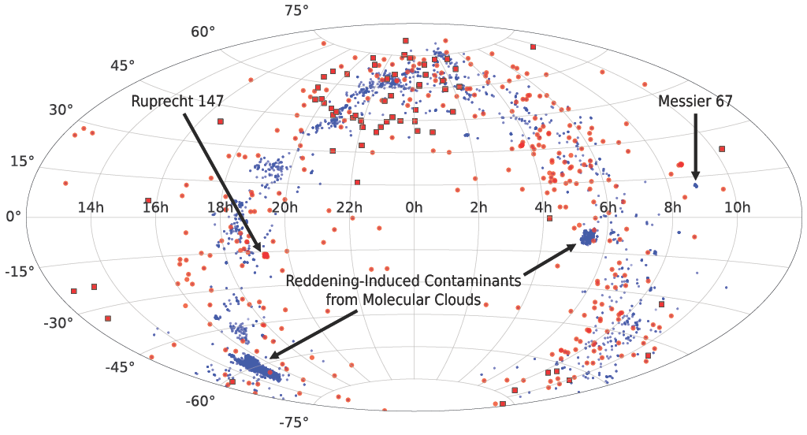

Hello!

I am a Ph.D. student and Graduate Research Assistant in Astronomy at Georgia State University in Atlanta, Georgia, where I began my Ph.D. in Fall 2024. I work with Dr. Russel White, and my research focuses on using evolved stars to constrain the ages of nearby open clusters and associations, providing insights into stellar evolution. Additionally, I am developing a census of red giants in nearby open clusters to identify promising targets for future interferometric observations. You can learn more about my research here:
______________________________________________________________________________________I received my Bachelor of Science in Physics, with a concentration in Astrophysics, from the Georgia Institute of Technology . You can view my Curriculum Vitae (CV) here.
Research
The Ages of the Nearest Open Clusters
Open clusters are important benchmarks for stellar evolution because they contain stars of different masses that formed at approximately the same time and share several common stellar parameters, such as composition. However, their absolute ages remain uncertain by approximately 20% in many cases.
This project aims to improve these age estimates using red giants observed with the CHARA Array. Interferometric measurements can directly constrain the angular diameters of red giants, which, when combined with distances and bolometric fluxes, allow fundamental stellar properties such as radius, luminosity, and effective temperatures to be determined. Comparing these properties with stellar evolutionary models allows us to place tighter constraints on cluster ages.
Our initial benchmark sample includes Ruprecht 147, Praesepe, Coma Berenices, Alpha Persei, the Hyades, and the Ursa Major Moving Group.
The ROC Catalog
The Red giants in Open Clusters (ROC) catalog aims to identify red giants suitable for precise age determinations in nearby stellar populations. Using the Montreal Open Clusters and Associations (MOCA) database, we are constructing two samples: ROC350 (covering clusters within 350 pc; encompassing many well-studied systems while remaining largely accessible to interferometric measurements) and ROC1000 (extending the sample to 1,000 pc; a volume within which many RGs remain sufficiently bright for asteroseismic characterization with TESS.)

The figure above showcases an aitoff projection of red giants in open clusters out to 350 pc (red points; preliminary) and 1000 pc (blue points; preliminary). Additionally, two prominent and well-stuided open clusters have also been marked: Ruprecht 147 (the oldest open cluster out to 350 pc) and M67 (the oldest open cluster out to 1000 pc). These catalogs will help identify promising interferometric targets and establish new benchmarks for testing stellar evolutionary models, with the goal of achieving cluster age uncertainties below 10%.
Research
The Ages of the Nearest Open Clusters
Open clusters are important benchmarks for stellar evolution because they contain stars of different masses that formed at approximately the same time and share several common stellar parameters, such as composition. However, their absolute ages remain uncertain by approximately 20% in many cases.
This project aims to improve these age estimates using red giants observed with the CHARA Array. Interferometric measurements can directly constrain the angular diameters of red giants, which, when combined with distances and bolometric fluxes, allow fundamental stellar properties such as radius, luminosity, and effective temperatures to be determined. Comparing these properties with stellar evolutionary models allows us to place tighter constraints on cluster ages.
Our initial benchmark sample includes Ruprecht 147, Praesepe, Coma Berenices, Alpha Persei, the Hyades, and the Ursa Major Moving Group.
The ROC Catalog
The Red giants in Open Clusters (ROC) catalog aims to identify red giants suitable for precise age determinations in nearby stellar populations. Using the Montreal Open Clusters and Associations (MOCA) database, we are constructing two samples: ROC350 (covering clusters within 350 pc; encompassing many well-studied systems while remaining largely accessible to interferometric measurements) and ROC1000 (extending the sample to 1,000 pc; a volume within which many RGs remain sufficiently bright for asteroseismic characterization with TESS.)
The figure above showcases an aitoff projection of red giants in open clusters out to 350 pc (red points; preliminary) and 1000 pc (blue points; preliminary). Additionally, two prominent and well-stuided open clusters have also been marked: Ruprecht 147 (the oldest open cluster out to 350 pc) and M67 (the oldest open cluster out to 1000 pc). These catalogs will help identify promising interferometric targets and establish new benchmarks for testing stellar evolutionary models, with the goal of achieving cluster age uncertainties below 10%.
Software
CHARA Array's Thrifty Calibrator Hunter — CATCH
The CHARA Array's Thrifty Calibrator Hunter (CATCH) is a Python-based software tool that Akshat Chaturvedi and I developed to simplify the process of identifying suitable calibrator stars for interferometric observations with the CHARA Array. Learn more about CATCH here!
Contact
Elementum sem parturient nulla quam placerat viverra mauris non cum elit tempus ullamcorper dolor. Libero rutrum ut lacinia donec curae mus. Eleifend id porttitor ac ultricies lobortis sem nunc orci ridiculus faucibus a consectetur. Porttitor curae mauris urna mi dolor.
Background Credit: M44 (Praesepe / Beehive Cluster) | Chuck Ayoub. CC0